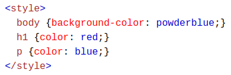
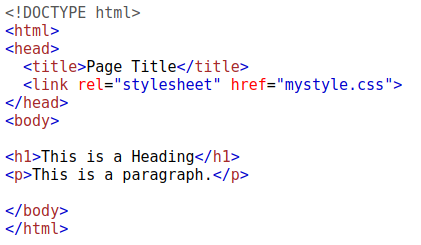
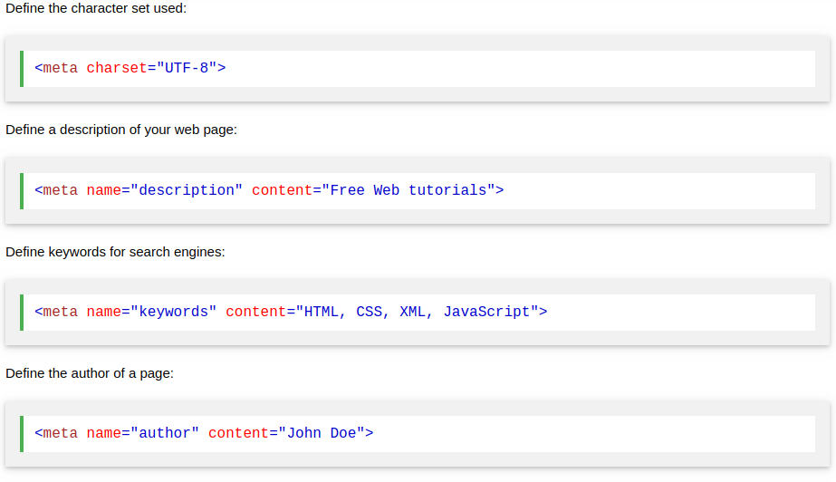
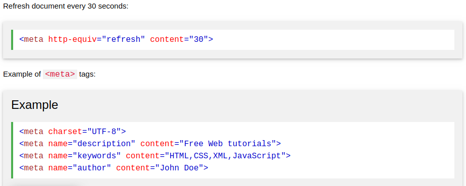
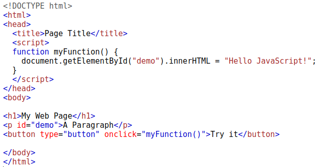

The < head> element is a container for metadata (data about data) and is placed between the < html> tag and the < body> tag. HTML metadata is data about the HTML document. Metadata is not displayed. Metadata typically define the document title, character set, styles, scripts, and other meta information.
The < title> element:
The style element is used to define style information for a single HTML page:
The < link> element is used to link to external style sheets:
The < meta> element is used to specify which character set is used, page description, keywords, author, and other metadata Metadata is used by browsers (how to display content), by search engines (keywords), and other web services.
 HTML5 introduced a method to let web designers take control over the viewport, through the < meta> tag The viewport is the user's visible area of a web page. It varies with the device, and will be smaller on a mobile phone than on a computer screen. You should include the following < meta> viewport element in all your web pages:
A < meta> viewport element gives the browser instructions on how to control the page's dimensions and scaling The width=device-width part sets the width of the page to follow the screen-width of the device (which will vary depending on the device). The initial-scale=1.0 part sets the initial zoom level when the page is first loaded by the browser. Here is an example of a web page without the viewport meta tag, and the same web page with the viewport < meta> tag:
The script element is used to define client-side JavaScripts. This JavaScript writes "Hello JavaScript!" into an HTML element with id="demo"
